11 Quán ăn vặt ở Hà Nội phải thử ngay, ngon khó cưỡng
Hà Nội không chỉ nổi tiếng với những di tích lịch sử và văn hóa lâu đời, mà còn là thiên đường ẩm thực đường phố với vô số món ngon khiến thực khách mê mẩn. Những quán ăn vặt ở Hà Nội mang hương vị đặc trưng, từ bình dị đến độc đáo, luôn là trải nghiệm không thể bỏ qua.
Top 11 Quán ăn vặt tại Hà Nội mang đến trải nghiệm đa dạng
Hà Nội là nơi hội tụ tinh hoa ẩm thực, đặc biệt là các món ăn chơi đường phố. Những món ăn vặt ở Hà Nội không chỉ ngon miệng mà còn chứa đựng cả một nét văn hóa, một phần ký ức của mảnh đất thủ đô. Bạn chắc chắn sẽ tìm thấy những hương vị quen thuộc hay những bất ngờ thú vị trong danh sách này.
Nem Chua Rán Tạm Thương – Hoàn Kiếm
- Giá dao động: 5.000 VNĐ – 55.000 VNĐ
- Giờ mở cửa: 08:00–23:00
Nem Chua Rán Tạm Thương – Hoàn Kiếm là một trong những nơi ăn vặt được nhiều người ghé đến khi muốn tìm món rán nóng hổi giữa khu phố cổ. Không gian nhỏ nhưng luôn tạo cảm giác gần gũi, phù hợp cho những buổi la cà chiều tối. Hương thơm từ các mẻ nem vàng ruộm lan ra cả góc phố, khiến ai đi ngang cũng khó lòng bỏ qua.
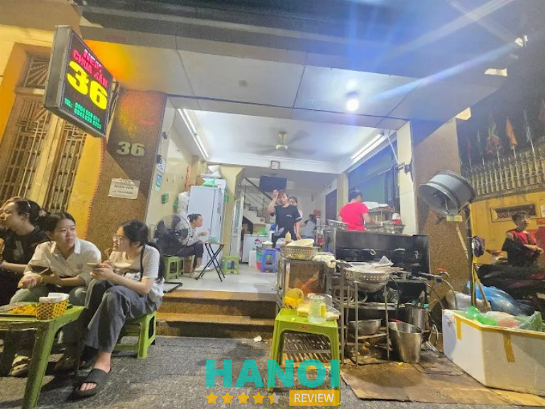
Điểm hút khách của quán đến từ những phần nem thủ công, rán vừa lửa, giòn nhẹ bên ngoài và mềm dẻo bên trong. Chấm kèm tương ớt hoặc sốt pha kiểu riêng nên hương vị rất bắt miệng. Ngoài nem, quán còn nhiều món phụ để đổi vị trong các buổi tụ tập.
Một số món được gọi nhiều:
- Nem chua rán thủ công
- Xúc xích rán
- Khoai chiên
- Phô mai que
- Sốt chấm nhà làm
Giá cả mềm, phù hợp học sinh – sinh viên lẫn dân văn phòng. Món rán lúc nào cũng nóng hổi, ít dầu, khẩu vị ổn định nên rất dễ ăn. Ai đang muốn tìm một chỗ ăn vặt ngon – nhanh – vui miệng ở Hoàn Kiếm thì Nem Chua Rán Tạm Thương là lựa chọn đúng điệu.
Thông tin liên hệ:
- Địa chỉ: Số 36 Tạm Thương, Hàng Gai, Hoàn Kiếm, Hà Nội
- Điện thoại: 0904 509 619
- Email: leminhkhoa76@gmail.com
- Website: nemchuarantamthuong.com
- Facebook: fb.com/nemchuaran36tamthuong
Ốc 29 – Cầu Giấy
- Giá tham khảo: 30.000 – 50.000 VNĐ
- Giờ mở cửa: 11:00 – 14:00 và 16:00 – 22:30
Nếu nhắc đến những địa điểm ăn vặt ở Hà Nội vừa ngon, vừa đa dạng lại có mức giá phải chăng, không thể bỏ qua thương hiệu Ốc 29. Đây là chuỗi nhà hàng nổi tiếng chuyên về các món ốc và hải sản tươi sống, được chế biến đậm đà theo nhiều phong cách khác nhau, thu hút đông đảo thực khách từ học sinh, sinh viên đến người đi làm.
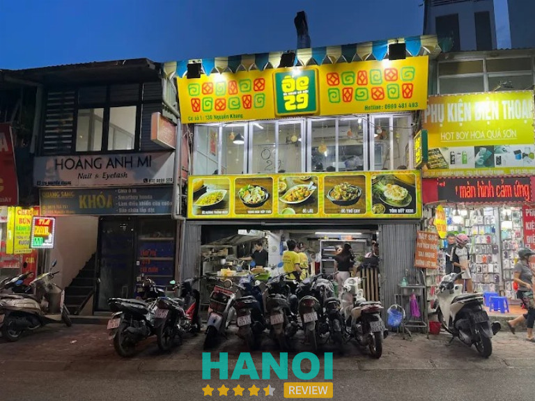
Ốc 29 được thực khách yêu thích bởi nguồn nguyên liệu luôn đảm bảo tươi ngon, sạch sẽ. Các loại ốc, hàu, ngao, bề bề đều được nhập về và sơ chế kỹ lưỡng trong ngày, giữ trọn độ tươi ngọt tự nhiên. Quán sở hữu thực đơn cực kỳ phong phú với gần 70 món ăn, đảm bảo đáp ứng mọi sở thích ẩm thực.
Một số món ăn làm nên tên tuổi của Ốc 29 và được coi là món ăn vặt “thượng hạng” tại Hà Nội bao gồm:
- Ốc Hương Rang Muối Ớt: Vị cay mặn đậm đà đặc trưng, ốc tươi giòn sần sật.
- Hàu Nướng Phô Mai: Món “best seller” với lớp phô mai béo ngậy, tan chảy, thơm lừng.
- Ốc Móng Tay Xào Me: Sốt me chua ngọt, sền sệt, dậy mùi thơm hấp dẫn, kích thích vị giác.
- Ngao Hấp Thái: Nước dùng cay thơm, nóng hổi, rất thích hợp cho những ngày se lạnh.
- Cút Lộn Xào Me: Món ăn vặt kinh điển của thủ đô, với nước sốt sánh quyện độc đáo.
- Bề Bề Rang Muối: Vỏ ngoài giòn tan, thịt bề bề chắc ngọt, thấm vị, ăn cực kỳ cuốn.
- Nộm Chân Gà Rút Xương: Chua cay hài hòa, là món “mồi nhậu” không thể thiếu trong các cuộc tụ họp.
Quán ốc này đặc biệt được đánh giá cao nhờ hương vị sốt độc quyền, đậm đà, kết hợp hài hòa giữa chua, cay, mặn, ngọt – một điểm nhấn quan trọng tạo nên nét riêng cho thương hiệu.
Dù có nhiều chi nhánh, Ốc 29 luôn giữ được chất lượng đồng đều, và không gian quán luôn được duy trì sạch sẽ, thoáng đãng. Thái độ phục vụ nhanh nhẹn, nhiệt tình cũng là một điểm cộng lớn, biến Ốc 29 thành lựa chọn lý tưởng cho những buổi tụ tập ăn uống, thưởng thức đồ ăn vặt ở Hà Nội cùng bạn bè và người thân.
Thông tin liên hệ:
- Địa chỉ: 130Nguyễn Khang, Yên Hoà, Cầu Giấy, Hà Nội
- Điện thoại: 0969 481 493
- Facebook: fb.com/oc29hanoi
Bánh Mỳ Chảo – Cột Điện Quán – Đống Đa
- Giờ mở cửa: 8:30 – 22:00
Bánh Mỳ Chảo – Cột Điện Quán từ lâu đã trở thành điểm hẹn quen thuộc của những ai mê ăn vặt, đặc biệt là nhóm yêu thích món nóng hổi, thơm lừng mỗi khi ghé qua các khu phố đông đúc của Hà Nội. Không chỉ nổi tiếng nhờ hương vị đặc trưng, quán còn tạo được dấu ấn nhờ phong cách phục vụ gần gũi và mức giá dễ chịu, phù hợp cho cả sinh viên lẫn dân văn phòng.
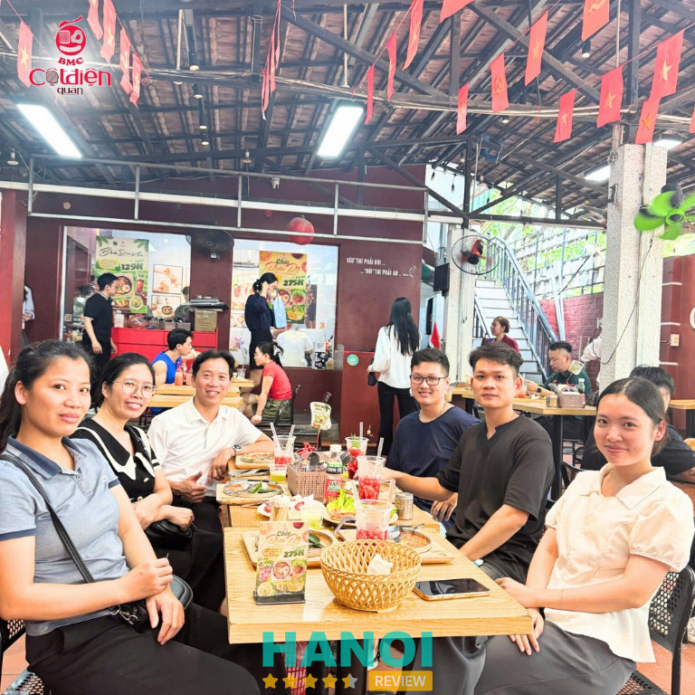
Món “Bánh Mỳ Chảo” tại đây luôn nằm trong top lựa chọn của thực khách. Một chiếc chảo gang nhỏ xinh nhưng đầy ắp topping, đặt xuống bàn là nghi ngút khói, mùi thơm lan ra khiến ai cũng phải nao lòng. Combo trong chảo được chuẩn bị rất tròn vị:
- Trứng ốp la vàng ươm, phần lòng vẫn mềm, béo mượt.
- Pate thơm nức, mềm mịn và đậm đà.
- Thịt xá xíu hoặc xúc xích được áp chảo nóng, mang vị mặn ngọt quyện lại rất kích thích vị giác.
- Nước sốt đặc trưng có độ sệt vừa phải, chan lên là khiến từng miếng bánh mỳ thêm phần trọn vị.
Ăn kèm là bánh mỳ nóng giòn mới ra lò, dưa chuột tươi và chút rau thơm giúp cân bằng vị béo – mặn – ngọt hài hòa. Dù chỉ là món ăn quen thuộc, Cột Điện Quán lại khiến nhiều thực khách “nghiện” bởi sự chăm chút trong từng chi tiết, tạo nên cảm giác vừa ấm bụng vừa trọn vẹn hương vị.
Bánh Mỳ Chảo ở đây phù hợp cho đủ thời điểm: bữa sáng đầy năng lượng, bữa trưa nhanh gọn hoặc bữa xế chiều đổi vị. Chính sự đơn giản nhưng chuẩn chỉnh ấy giúp quán giữ được lượng khách ổn định và trở thành điểm đến lý tưởng cho những ai muốn tìm một món ngon quen thuộc nhưng luôn cuốn hút.
Thông tin liên hệ:
- Địa chỉ: 71 Đặng Văn Ngữ, Trung Tự, Đống Đa, Hà Nội
- Điện thoại: 0917 130 986
- Email: Bmccotdienquan2012@gmail.com
- Facebook: fb.com/cot.dien.quan
Chè Đông Anh
- Giá dao động: 15.000 VNĐ – 39.000 VNĐ
- Giờ mở cửa: 8:00 – 22:00
Chè Đông Anh nằm cách cổng trường Nguyễn Huy Tưởng 50m, là quán ăn vặt được học sinh trường này ưa chuộng từ lâu. Tại Chè Đông Anh, chất lượng là ưu tiên hàng đầu. Từ nguyên liệu tươi ngon đến cách chế biến tinh tế, mỗi ly chè đều đượm đà hương vị tự nhiên và đậm đà. Quán cũng có menu phong phú với những món ăn vặt phổ biến như: phô mai que, khoai lang kén, bánh tráng cuộn.
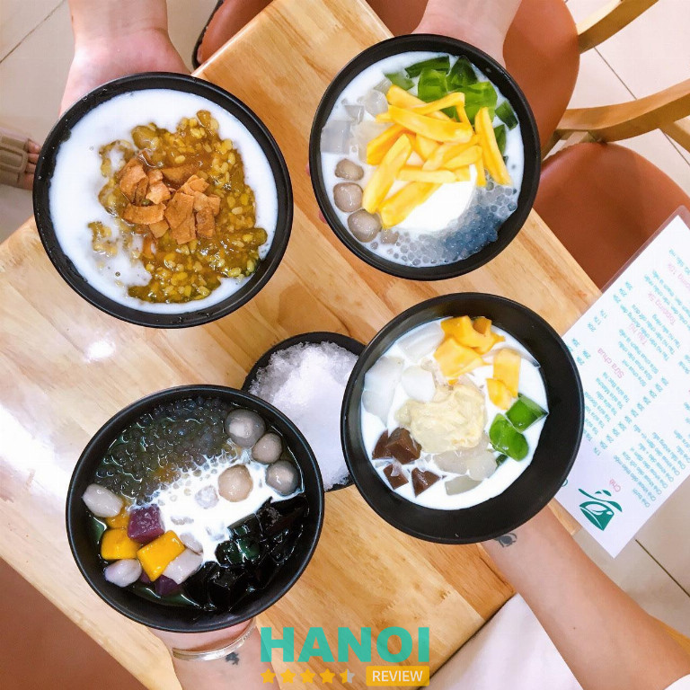
Chè Đông Anh sở hữu 2 khu vực: trong nhà và ngoài trời, đáp ứng mọi nhu cầu. Khu vực trong nhà được trang trí hiện đại, mát mẻ, thích hợp cho những buổi hẹn hò hay tụ tập gia đình. Khu vực ngoài trời thoáng mát, gần gũi với thiên nhiên, mang đến cảm giác thư giãn nhẹ nhàng.
Thêm vào đó, quán ăn vặt này cũng có giá cả rất hợp lý, phù hợp với học sinh. Đây là địa điểm không nên bỏ qua khi tìm các quán ăn vặt ngon ở Hà Nội chất lượng.
Một số món ăn được ưa chuộng nhất tại quán:
- Chè bưởi: 20.000 VNĐ
- Chè dừa dầm: 25.000 VNĐ
- Gà xiêng nướng: 10.000 VNĐ/cái
- Khoai lang kén 30.000 VNĐ/suất
Với sự yêu mến từ cộng đồng học sinh và tiêu chí chất lượng vượt trội, Chè Đông Anh xứng đáng là địa điểm hàng đầu để thưởng thức chè và các món ăn vặt chất lượng cao ở Hà Nội. Hãy ghé thăm để trải nghiệm không gian và hương vị ẩm thực độc đáo.
Thông tin liên hệ:
- Địa chỉ: Ấp Tó, Uy Nỗ, Đông Anh, Hà Nội
- Điện thoại: 0982 900 049
- Facebook: fb.com/chedonganh
Vua Tào Phớ – Hoàn Kiếm
- Giá dao động: 10.000 VNĐ – 100.000 VNĐ
- Giờ mở cửa: 08:00 – 23:00
Nằm giữa lòng phố cổ sầm uất, Vua Tào Phớ tại 192 Hàng Bông là một điểm đến không thể bỏ qua cho những người yêu thích đồ ăn vặt Hà Nội. Với hơn 15 năm kinh nghiệm, quán đã khẳng định vị thế là nơi hội tụ của những hương vị giải nhiệt truyền thống và hiện đại.
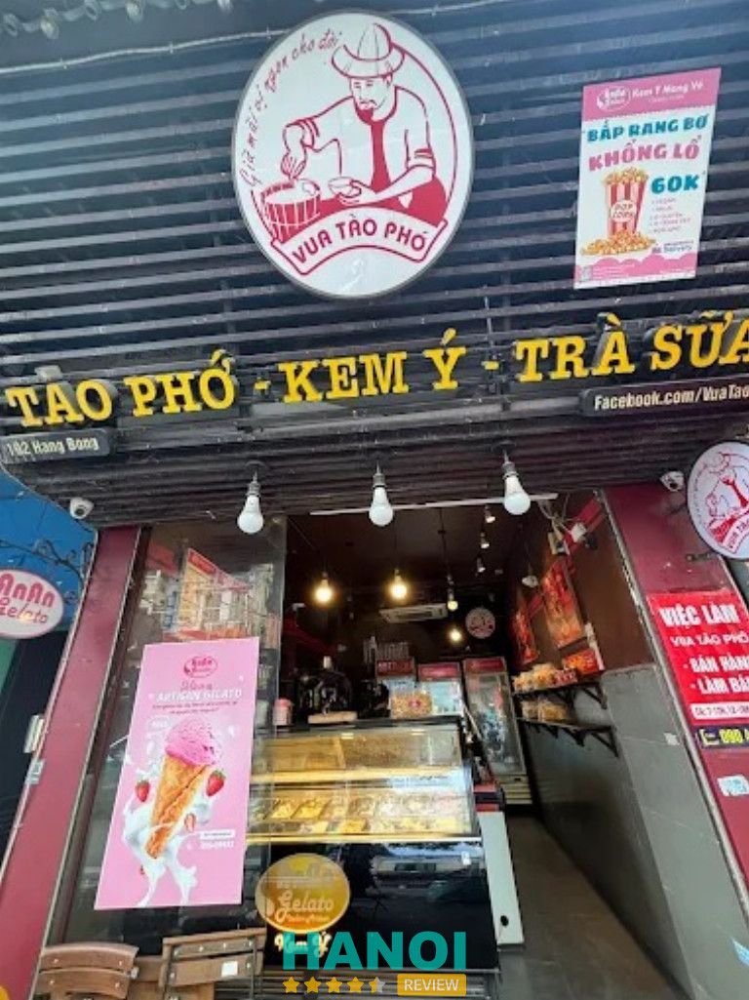
Món chủ đạo – Tào Phớ – được đánh giá cao nhờ độ mịn màng, tan chảy trong miệng, kết hợp với nước đường gừng thanh mát. Quán không chỉ dừng lại ở tào phớ truyền thống mà còn phục vụ nhiều biến tấu hấp dẫn khác.
Điểm đặc biệt làm nên sự phong phú của Vua Tào Phớ là sự góp mặt của các thương hiệu nổi tiếng:
- Kem Ý AnAn Gelato: Mang đến vị kem Ý chuẩn mực, ít ngọt, mát lạnh.
- Chè Bưởi ThonThon: Nổi tiếng với hạt bưởi giòn sần sật, nước cốt dừa béo ngậy, là món ăn quen thuộc được nhiều người yêu thích.
- Nhân Mỹ: Cung cấp thêm sự đa dạng cho menu chè và đồ ăn vặt.
Quán có không gian ấm cúng, phù hợp để bạn bè, gia đình ghé qua thưởng thức. Vua Tào Phớ xứng đáng là địa chỉ lý tưởng để tận hưởng trọn vẹn hương vị ẩm thực đường phố tinh hoa của Thủ đô.
Thông tin liên hệ:
- Địa chỉ: 192 Hàng Bông, Hoàn Kiếm, Hà Nội
- Điện thoại: 0904 999 333
- Facebook: fb.com/Vuataopho
Phở Cuốn Hưng Bền – Ba Đình
- Giờ mở cửa: 09:00 – 23:00
- Giá dao động: 20.000VNĐ – 55.000 VNĐ
Phở Cuốn Hưng Bền, một điểm đến quen thuộc tại làng Ngũ Xã, đã tạo nên danh tiếng vững chắc trong thế giới ẩm thực Thủ đô. Với hương vị đậm đà, chuẩn vị Hà Thành, quán ăn vặt ngon ở Hà Nội này từ lâu đã trở thành lựa chọn ưu tiên cho nhiều thực khách sành ăn.
Nơi đây mang đến những phút giây trải nghiệm tuyệt vời bên người thân, bạn bè khi thưởng thức các món ăn truyền thống được chế biến tỉ mỉ.
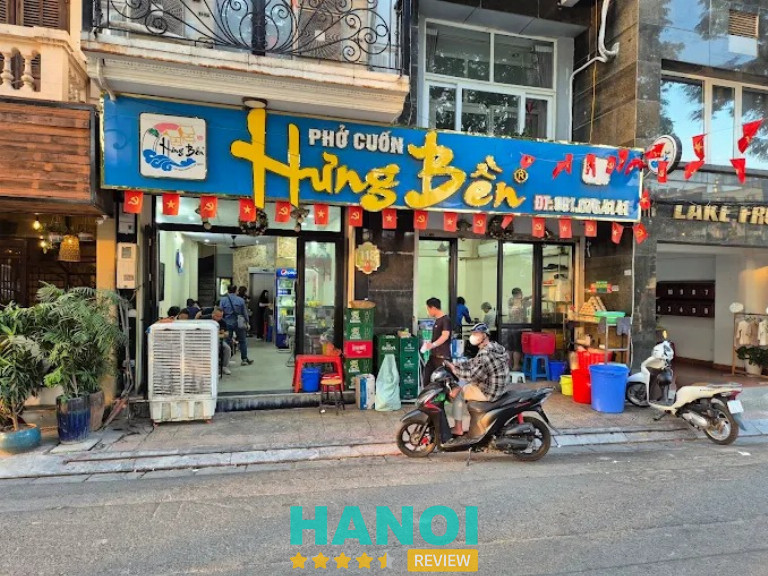
Mỗi chiếc phở cuốn tại Hưng Bền đều được chế biến cẩn thận, hội tụ đầy đủ rau mùi tươi ngon, rau sống giòn mát và lớp bánh phở thơm mềm đúng điệu. Công thức gia truyền cùng sự tận tâm trong từng khâu đã giúp món ăn giữ trọn hương vị truyền thống, làm say lòng cả những thực khách khó tính nhất.
Ngoài phở cuốn trứ danh, thực đơn tại quán còn đa dạng với các món phụ hấp dẫn khác, mở rộng sự lựa chọn cho người thưởng thức:
- Chả ngan nướng
- Nầm dê nướng
- Các món ăn vặt đặc trưng khác
Không gian quán tuy đơn giản với những dãy bàn ghế san sát, gợi nhớ đến những quán ăn bình dị của Hà Nội xưa, nhưng lại vô cùng ấm cúng và gần gũi. Dù ngồi trong nhà hay ngoài vỉa hè, thực khách đều cảm nhận được bầu không khí thân thuộc, dễ chịu. Hơn hết, giá cả các món ăn tại Phở Cuốn Hưng Bền vô cùng hợp lý, phù hợp với mọi túi tiền, giúp trải nghiệm ẩm thực chất lượng cao trở nên dễ tiếp cận.
Phở Cuốn Hưng Bền xứng đáng là một địa chỉ ẩm thực uy tín, nơi lưu giữ hương vị tinh hoa của ẩm thực Hà Nội. Đây là lựa chọn hoàn hảo để thưởng thức các món ăn ngon, chuẩn vị trong một không gian thân mật, với chi phí phải chăng. Hãy đến Phở Cuốn Hưng Bền ngay để tự mình trải nghiệm dịch vụ ẩm thực tuyệt vời tại đây.
Thông tin liên hệ:
- Địa chỉ: 118 Trấn Vũ, Ba Đình, Hà Nội
- Điện thoại: 0916 764 141
- Facebook: fb.com/phocuonhungben
Ốc Hương Trang – Hà Đông
- Giá tham khảo: Từ 50.000 VNĐ
- Giờ mở cửa : 8:00 – 23:00
Ốc Hương Trang là một quán ăn vặt chuyên về các món ốc nổi tiếng tại Hà Nội, đã tạo dựng được thương hiệu vững chắc trong lòng thực khách. Quán chuyên phục vụ những món ốc tươi ngon, được chế biến theo nhiều phong cách khác nhau, mang đến hương vị thơm ngon đặc trưng.
Với kinh nghiệm phục vụ nhiều năm, Ốc Hương Trang luôn chú trọng chất lượng nguyên liệu và quy trình chế biến, biến quán thành một lựa chọn đáng tin cậy cho những tín đồ ẩm thực đường phố. Thế mạnh lớn nhất của quán chính là sự đa dạng trong thực đơn ốc cùng chất lượng món ăn đồng đều, hấp dẫn qua từng lần ghé thăm.
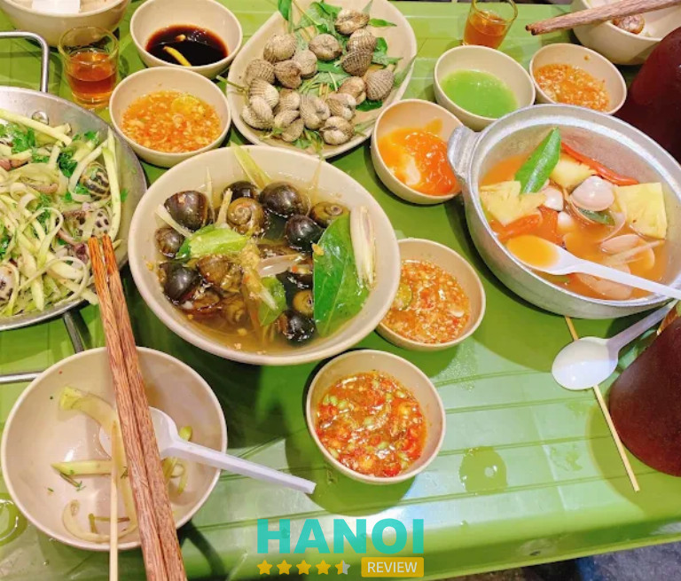
Dịch vụ tại Ốc Hương Trang được đánh giá cao nhờ sự nhanh nhẹn và thái độ phục vụ thân thiện. Điểm nổi bật là thực đơn phong phú, đáp ứng nhiều sở thích khác nhau. Sản phẩm nổi trội nhất phải kể đến các món ốc được chế biến theo công thức riêng, giữ trọn hương vị truyền thống mà vẫn có nét sáng tạo hiện đại. Giá cả các món ăn tại đây rất phải chăng, phù hợp với túi tiền của mọi đối tượng, đặc biệt là học sinh, sinh viên và dân văn phòng.
Quán ốc này có nhiều món ngon không thể bỏ qua:
- Ốc hương xào me đậm đà
- Ốc móng tay xào tỏi thơm lừng
- Ngao hấp xả cay nồng
- Nem chua rán giòn rụm
- Trà chanh giải khát
Ốc Hương Trang mang đến những trải nghiệm ẩm thực đường phố chất lượng cao, xứng đáng là lựa chọn hàng đầu khi tìm kiếm địa điểm ăn ốc ngon tại thủ đô. Quán đã và đang là nơi gửi gắm niềm yêu thích ẩm thực của nhiều người dân Hà Nội.
Thông tin liên hệ:
- Địa chỉ: 137B Lê Hồng Phong, Hà Đông, Hà Nội
- Điện thoại: 0906 240 099
- Website: ochuongtrang.vn
- Facebook: fb.com/ochuongtrangngon
Nem nướng Nha Trang Hà Anh – Hai Bà Trưng
- Giá dao động: 25.000 VNĐ – 50.000 VNĐ
- Giờ mở cửa: 09:00 – 21:30
Nem nướng Nha Trang Hà Anh là một lựa chọn quen thuộc của nhiều tín đồ quán ăn vặt ở Hà Nội, đặc biệt là những ai mê phong vị miền biển. Địa chỉ nằm trong khu ngõ Tự Do, tạo nên cảm giác gần gũi của một quán ăn đậm chất sinh viên. Uy tín của quán được hình thành nhờ hương vị ổn định, nguyên liệu chuẩn Nha Trang và phong cách phục vụ thân thiện. Thế mạnh lớn nhất đến từ sự chỉn chu trong từng phần đồ ăn, từ nem đến rau sống lẫn nước chấm.
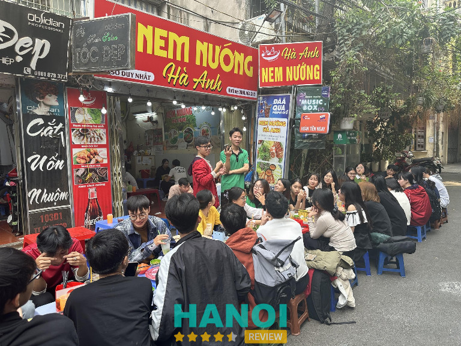
Đi sâu vào trải nghiệm món, nem nướng tại đây có độ giòn nhẹ bên ngoài, thơm beo béo phần mỡ, ăn kèm bánh tráng mềm và rau tươi. Nước chấm pha sánh đặc trưng kiểu Nha Trang giúp tổng thể món thêm đậm đà. Ngoài nem nướng, thực đơn còn có cuốn, phở cuốn nem, phần ăn combo phù hợp cho nhóm nhỏ. Giá thành được niêm yết rõ ràng, mức chi tiêu hợp lý với đa số khách ghé quán.
Một số điểm nổi bật khác:
- Phần ăn nhiều lựa chọn, mỗi món đều giữ phong vị đặc trưng
- Nguyên liệu chuẩn vị Nha Trang
- Hương vị ổn định, hợp khẩu vị nhiều nhóm khách
- Giá phù hợp sinh viên và nhân viên văn phòng
Nem nướng Nha Trang Hà Anh là điểm dừng lý tưởng dành cho những ai tìm hương vị Nha Trang giữa lòng Hà Nội. Hương vị ổn định, nguyên liệu quen thuộc và cách phục vụ gần gũi tạo nên một địa chỉ dễ ghé lại mỗi khi thèm món cuốn tươi ngon. Sự tin chọn của nhiều thực khách là minh chứng rõ ràng cho chất lượng mà quán đang duy trì, rất đáng để ưu tiên khi muốn thưởng thức món ngon tròn vị.
Thông tin liên hệ:
- Địa chỉ: 103 D1, ngách 98, ngõ Tự Do, Hai Bà Trưng, Hà Nội
- Điện thoại: 0966 404 313
- Facebook: fb.com/61580281836190
Mỳ cay Sasin – Hai Bà Trưng
- Giá dao động: 40.000 VNĐ – 100.000 VNĐ
- Giờ mở cửa: 09:00 – 22:00
Mỳ cay Sasin trên đường Trần Đại Nghĩa từ lâu đã được biết đến như một điểm ăn vặt quen thuộc của giới trẻ Hà Nội. Không gian trẻ trung, phong cách phục vụ nhanh nhẹn và món ăn lên bàn luôn nóng hổi chính là nền tảng tạo nên sức hút. Sự chỉn chu trong từng tô mỳ, từng phần topping và hương vị đậm đà khiến nơi đây trở thành điểm tụ tập lý tưởng cho các nhóm bạn cần một bữa ăn tròn vị.
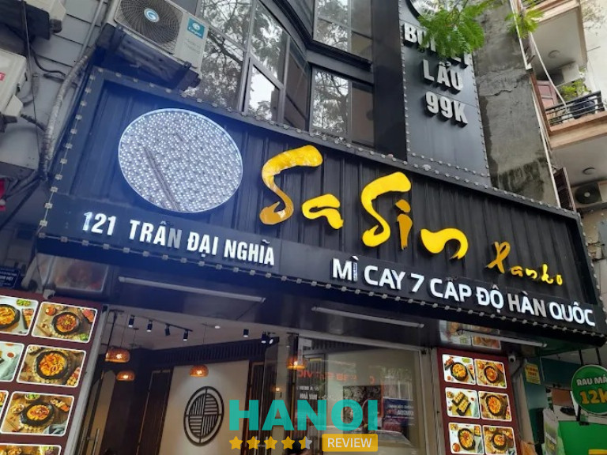
Các món ăn được chế biến theo hương vị cay chuẩn Hàn, nồng nhưng không gắt, phù hợp nhiều khẩu vị. Topping phong phú gồm xúc xích, chả cá, bò, hải sản… kết hợp cùng nước dùng cay nhẹ ban đầu rồi nâng dần độ cay theo sở thích. Giá bán nằm trong tầm phổ thông, phù hợp học sinh – sinh viên quanh khu Bách Khoa. Đội ngũ phục vụ trẻ, xử lý món nhanh, giữ nhịp ổn định kể cả lúc đông khách.
Một số lựa chọn được ưa chuộng:
- Mỳ cay cấp độ đa dạng phù hợp nhiều khẩu vị
- Tokbokki sốt cay đậm đà
- Cơm trộn Hàn Quốc nóng hổi
- Phô mai kéo sợi cho món thêm tròn vị
Tên tuổi Mỳ cay Sasin được xây dựng từ chất lượng món ăn đồng đều và phong cách phục vụ gọn gàng. Đây là gợi ý phù hợp khi cần tìm nơi ăn vặt ở Hà Nội có mức giá dễ chịu và hương vị dễ ghi nhớ.
Thông tin liên hệ:
- Địa chỉ: 119A Trần Đại Nghĩa, Bách Khoa, Hai Bà Trưng, Hà Nội
- Điện thoại: 1900 0131
- Email: phananh.kh@sasin.vn
- Website: sasin.vn
- Facebook: fb.com/Sasin.MicayHanQuoc
A Tốn Fruit – Thanh Xuân
- Giá dao động: 10.000 VNĐ – 55.000 VNĐ
- Giờ mở cửa: 07:00 – 22:00
A Tốn Fruit được biết đến như một điểm chuyên cung cấp trái cây tươi phục vụ nhu cầu sử dụng hàng ngày lẫn biếu tặng. Danh tiếng của cửa hàng được hình thành dựa trên chất lượng sản phẩm ổn định, nguồn gốc minh bạch và phong cách phục vụ tận tình. Thế mạnh nổi bật nằm ở khả năng chọn lọc trái cây đạt chuẩn, đa dạng chủng loại theo mùa, đáp ứng khách tìm sản phẩm sạch hoặc giỏ quà cao cấp.
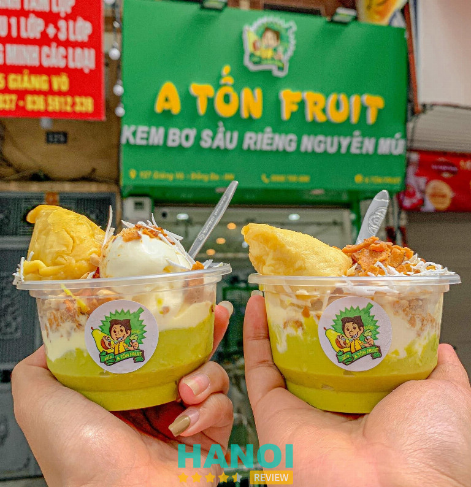
Dịch vụ tại A Tốn Fruit luôn chú trọng trải nghiệm mua sắm. Trái cây được phân loại theo tiêu chí rõ ràng, bày trí dễ chọn, giá bán niêm yết cụ thể. Đội ngũ phục vụ hiểu rõ đặc tính từng loại quả, hỗ trợ tư vấn phù hợp theo mục đích sử dụng như ăn trực tiếp, dùng trong tiệc, làm quà tặng. Ngoài ra, các giỏ trái cây được trang trí chỉnh chu, có nhiều mức ngân sách, phù hợp từ nhu cầu cá nhân đến doanh nghiệp.
Một số điểm đáng chú ý:
- Trái cây tuyển chọn từ vườn, farm uy tín.
- Có sẵn combo theo mùa.
- Nhiều mẫu giỏ quà trái cây.
- Dịch vụ giao hàng linh hoạt.
- Giá thành rõ ràng theo từng loại.
A Tốn Fruit tạo được sự tin chọn từ nhiều khách hàng nhờ chất lượng sản phẩm và cách phục vụ chuyên nghiệp. Đây cũng là gợi ý phù hợp dành cho những ai tìm nguồn trái cây sạch, quà tặng sang trọng hoặc không gian mua sắm tương tự quán ăn vặt ở Hà Nội theo hướng tiện lợi, nhanh gọn. Sự lựa chọn dành cho A Tốn Fruit mang lại trải nghiệm mua hàng an tâm và dễ chịu.
Thông tin liên hệ:
- Địa chỉ: 19 Giáp Nhất, Thượng Đình, Thanh Xuân, Hà Nội
- Điện thoại: 0911 911 666
- Facebook: fb.com/ATONFRUIT
Trứng Chén Nướng Cô Ty – Ba Đình
- Giờ mở cửa: 14:30 – 22:00
Trứng Chén Nướng Cô Ty là điểm đến quen thuộc của nhiều người yêu món nướng đường phố. Quán hoạt động lâu năm và được biết đến là nơi bán trứng chén nướng đầu tiên tại Hà Nội. Hương vị đặc trưng, phong cách chế biến riêng và sự ổn định trong phục vụ tạo nên sức hút bền bỉ cho địa chỉ này.
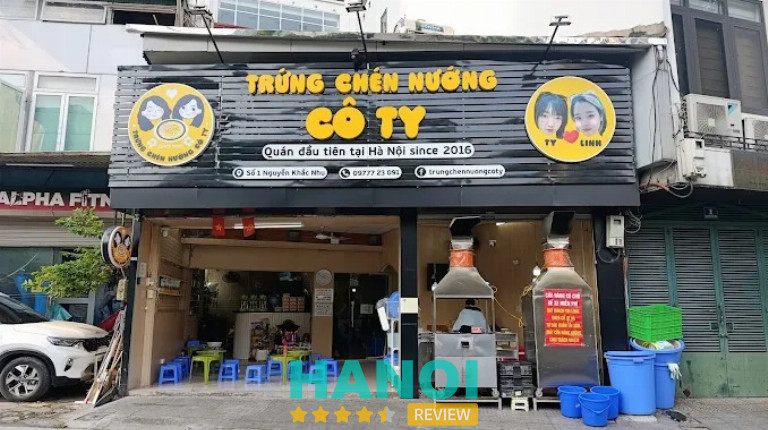
Không gian mộc mạc, gần gũi giúp thực khách dễ dàng thưởng thức các món trứng nướng nóng hổi. Mỗi phần trứng được chế biến trực tiếp trên bếp than, tạo mùi thơm khó nhầm lẫn. Nguyên liệu sử dụng rõ ràng, cách nêm nếm luôn giữ trọn độ béo ngậy vừa phải. Đội ngũ phục vụ nhanh nhẹn, thao tác gọn gàng, giúp món ăn đến tay thực khách khi còn nóng và đẹp mắt.
Một số điểm nổi bật:
- Trứng chén nướng hương vị đặc trưng.
- Quy trình nướng trực tiếp tạo độ thơm hấp dẫn.
- Phục vụ nhanh.
- Giá bán phù hợp nhiều nhóm khách.
- Menu tập trung, dễ chọn món.
Món trứng chén nướng nóng hổi, thơm lừng luôn tạo ấn tượng tốt và thu hút nhiều thực khách quay lại. Uy tín của Trứng Chén Nướng Cô Ty được xây dựng từ chất lượng món ăn và sự tin chọn của nhiều người trong khu vực. Lựa chọn quán khi muốn thưởng thức một hương vị quen thuộc, mang màu sắc riêng của món ăn đường phố Hà Nội.
Thông tin liên hệ:
- Địa chỉ: Số 1 Nguyễn Khắc Nhu, Ba Đình, Hà Nội
- Điện thoại: 0977 723 091
- Email: trungchennuongcoty@gmail.com
- Facebook: fb.com/trungchennuongcoty
Tiêu chí chọn lựa những địa điểm ăn vặt ở Hà Nội chất lượng nhất
Thủ đô có hàng ngàn quán xá, việc chọn được địa điểm lý tưởng để thưởng thức món ăn vặt ở Hà Nội có thể khiến bạn phân vân. Để giúp bạn tiết kiệm thời gian và có trải nghiệm trọn vẹn, đây là những tiêu chí quan trọng nhất để đánh giá một quán ăn vặt nên ghé thăm.
- Vị trí thuận tiện: Khu vực dễ tìm, gần trung tâm hoặc các tuyến phố quen thuộc hỗ trợ người ăn ghé nhanh và tiết kiệm thời gian di chuyển khi lựa chọn món.
- Hương vị đặc trưng: Món ăn nên giữ đúng phong cách riêng, gia giảm hợp lý để tạo sự hài lòng, đồng thời giúp thực khách cảm nhận được dấu ấn riêng của quán.
- Giá bán rõ ràng: Bảng giá minh bạch, mức phí hợp lý theo từng phần ăn sẽ mang lại cảm giác yên tâm và phù hợp nhu cầu thưởng thức của từng người.
- Không gian sạch sẽ: Khu vực chế biến và nơi phục vụ cần gọn gàng nhằm tạo cảm giác yên tâm, đồng thời tăng trải nghiệm mỗi khi thực khách thưởng thức món.
- Menu phong phú: Sự đa dạng giúp người ăn dễ đổi vị và tìm được lựa chọn hợp ý, đặc biệt trong những buổi tụ tập bạn bè hay cần thay đổi trải nghiệm ẩm thực.
- Thời gian phục vụ linh hoạt: Khung giờ mở cửa rộng hỗ trợ thực khách ăn chiều, ăn đêm hoặc đặt món mang về một cách thoải mái và thuận tiện theo nhu cầu.
- Đánh giá tích cực: Phản hồi từ khách cũ giúp kiểm chứng chất lượng và cung cấp gợi ý phù hợp cho những ai lần đầu tìm điểm thưởng thức món nhẹ.
Nguồn lựa chọn ăn vặt ở Hà Nội vô cùng dồi dào, mang lại sự thoải mái, linh hoạt và nhiều trải nghiệm đáng thử qua từng phong cách quán. Từ món truyền thống đến biến tấu mới, hương vị đều dễ phù hợp nhiều khẩu vị khác nhau. Khi biết cách chọn địa điểm theo các tiêu chí quan trọng, mỗi buổi hẹn hò hay giờ nghỉ đều trở nên thú vị hơn. Hãy dành chút thời gian khám phá và cảm nhận trọn vẹn hương vị thủ đô.
Có thể bạn quan tâm
- 10 Quán ăn Pháp ở Hà Nội ngon, phục vụ tận tâm, giá hợp lý
- 10 Địa chỉ học làm bánh ở Hà Nội chất lượng, hiệu quả cho mọi đối tượng
- 10 Quán nộm ngon ở Hà Nội hấp dẫn vị giác, giá cả hợp lý
- 10 Quán cafe game ở Hà Nội cực chất, không gian độc đáo
DOANH NGHIỆP: Đăng tải thông tin MIỄN PHÍ.
Tin đọc nhiều


10 Quán ăn Pháp ở Hà Nội ngon, phục vụ tận tâm, giá hợp lý
Thủ đô Hà Nội, với sự giao thoa văn hóa mạnh mẽ, đã hình thành nên một bức tranh ẩm thực đa dạng, trong đó,...

10 Quán cafe game ở Hà Nội cực chất, không gian độc đáo
Mô hình quán cafe game ở Hà Nội là sự kết hợp hoàn hảo giữa không gian thưởng thức đồ uống thư giãn và khu...

5 Quán chè sầu tại Hà Nội thơm ngon nức tiếng, rất đông khách
Những quán chè sầu tại Hà Nội luôn thu hút đông đảo các thực khách tìm đến để thưởng thức. Bởi đây là một trong...

10 Quán phở gà tại Hà Nội ngon nức tiếng, khách đông nườm nượp
Phở gà từ lâu là món gây thương nhớ trong lòng biết bao người Hà Nội. Để tìm một quán phở gà tại Hà Nội...

Trở thành người đầu tiên bình luận cho bài viết này!